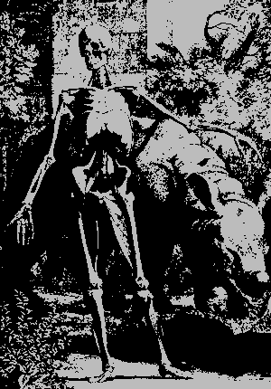
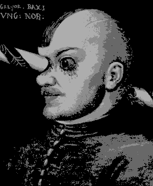
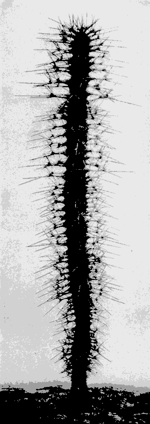
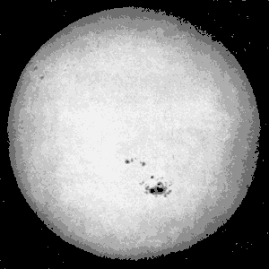
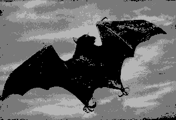
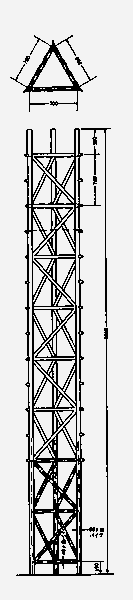

large dinosaur attacking a group of people
The image vividly depicts a scene of a large dinosaur attacking a group of people. The dinosaur's gigantic stature is highlighted in the attack, making it the center point of the scene. It's a detailed illustration of what looks like a prehistoric encounter, stirring up the primeval fears of the onlookers. Elements of the image also suggest a close-up view of the dinosaur, adding to the intensity of the scene. The image also captures the chaos of the attack with blurry images of a person falling down. Interestingly, there's also a horse with a long tail in the scene. A rock formation serves as the backdrop, giving the scene a more authentic prehistoric feel. The image embodies themes of paleontology and zoology, bringing the bygone era of dinosaurs to life.
109
group of skeletons of dinosaurs
This image primarily features a group of dinosaur skeletons in various shapes, sizes, and postures. The skeletons are intricately detailed and meticulously arranged, creating a dramatic visual impact. This image is monochromatic, with dominant shades of grey and white. The text "SKELETTEN VAN DE REUZENLUIAARDS" appears in the image, which translates to "Skeletons of the Giant Sloths" in English. In addition to the dinosaur skeletons, there are hints of an animal and mammal presence as well, suggesting a diverse ecosystem. Despite the inherent starkness, the image is filled with the mystery and wonder of prehistoric life.

This image is a stunning monochromatic representation, dominated by shades of grey and white. It depicts a skeleton standing on a rock, positioning itself in an almost heroic posture. The skeleton, which carries mammalian characteristics, covers a large portion of the image. Intriguingly, there is a suggestion of a rhinoceros present behind the skeleton, creating an unusual juxtaposition between the forms of life and death, nature and the supernatural. The image carries the aesthetics of a sketch or drawing, possibly a painting, hinting at an artistic purpose. The metadata indicates that the image is derived from "Tabulae sceleti et musculorum" by Bernhard Albinus the Younger, a publication from 1747, which further adds to its historical and academic value.
black and white image of a meteor
This image appears to be a black and white scientific representation of a meteor. It's an original depiction of a comet and its transformation into equidensities of the first and second order. The image broadly resembles a black paint splatter on a white surface, possibly denoting a comet's trajectory or impact. There's also a close-up of a white surface, which might indicate a zoomed-in view of the meteor or the surface it impacts. Despite the abstract nature of the image, there are elements reminiscent of a plane flying through the sky, indicating a sense of motion or direction. The image carries an essence of a sketch or drawing, possibly made for educational or research purposes in the field of astronomy or astrophysics.
close-up of a sea urchin
This image features a detailed close-up of a sea urchin, specifically a Plagiobrissus grandis. This fascinating invertebrate animal has been captured in a way that the observer can appreciate the intricacies of its unique physical structure. The image has been manipulated to remove the sea urchin's characteristic spiky protrusions, allowing for a clearer view of the underlying bumps or nodules on its body. This intricate pattern is typically hidden under the sea urchin's spines, painting a distinct picture of this creature's anatomy. The photograph is mostly monochromatic, composed primarily of shades of grey and white, emphasizing the sea urchin's texture and form. There is also text present in the image, providing additional information about the sea urchin. Specifically, it mentions that the image's scale is one-third of the actual size of the sea urchin.

The image showcases a portrait, predominantly in shades of grey and white, of a man with distinct facial features, including an eye, nose, lips, forehead, and jaw. The man's face is adorned with a horn-like object on the nose adding a peculiar aspect to his appearance. A close observation of the image reveals a line of oval-like shapes, possibly a part of the man's attire or a decorative element in the background. The man's facial hair, possibly a beard, further enhances his masculine look. In the backdrop, there's white text on a grey background, which seems to narrate a story about a person named Gregor Baci and a tournament accident. The text suggests that Gregor lived for a year with a lance that had pierced his head, which he had cut off from the front and back.
white plastic cup with a lid
The image features a simplistic yet elegant design of a white plastic cup, which is the focal point of the picture. The cup, with its lid on, is showcased against a white background, emphasizing its details and hinting at a minimalistic aesthetic. The image seems to be in black and white, adding a timeless appeal to the ordinary object. Interestingly, the cup is tagged as a vase, suggesting a creative interpretation or use. The photo also includes a caption in Dutch that references an exhibition dedicated to 'ordinary design' held in Darmstadt in 1976, highlighting objects that have proven their usefulness and become part of our daily lives. This cup, therefore, might represent a tribute to the functional, everyday design that often goes unnoticed. Despite its simplicity, the cup may symbolize the beauty in ordinary objects, celebrating their practicality and the role they play in our daily routines.
man standing in front of a large stone structure
In this black and white photograph, a man is standing before an imposing stone structure, which exudes a certain grandeur and majesty. The megalithic structure is the focal point of the image, capturing the viewer's attention with its intricate details. The man's small stature in comparison to the stone monolith further underscores the structure's size and significance. The scene is set outdoors, under a sky that is captured in varying shades of grey. The man appears in the lower half of the frame, creating a sense of depth and perspective in the photo. The monochrome palette imbues the photograph with a timeless, vintage quality. Despite the lack of vibrant hues, the image is visually rich with an array of grey tones and textures. The stone structure, in particular, displays intricate patterns and forms that draw the eye. Furthermore, the man's presence adds a human element to the scene, prompting viewers to wonder about his connection to the stone structure. This photograph beautifully showcases the contrast between man-made architectural beauty and the natural world.

This is a close-up, black and white image of a cactus, specifically a type of Fakkeldistels. This type of cactus is known to reach significant heights, which is hinted at in the image due to its vertical orientation that spans a large portion of the frame. The photo effectively showcases the protective thorns of the cactus, which are a characteristic feature of this plant species. The sharpness and detail of the thorns are enhanced by the monochrome color scheme, which also adds an artistic touch to the image. The image seems to be taken outdoors, possibly in a natural environment, which is typical for this type of plant. This image not only captures the unique physical attributes of the cactus but also conveys a sense of its resilience and adaptability.
close-up of a sea urchin
The image presents an extremely detailed view of the fascinating world beneath the oceans by featuring a sea urchin, specifically of the species "Astropyga radiata". The sea urchin, shown in close-up, reveals the creature's distinct five-point symmetry. The animal's spines have been carefully removed to expose the lumpy surface of its shell, revealing the intricacies of this marine creature's physiology. It's a grayscale image, primarily dominated by shades of grey and white, adding a certain richness to the intricate patterns on the sea urchin's body. There's also some text present in the image, providing information about the sea urchin. The text, which seems to be in Dutch, discusses the five-point radial symmetry of the featured sea urchin, and mentions that the spines have been removed to show the bumps on the plates. It also includes a note about the size of the sea urchin depicted.
man punching another man
The image features two men engaged in a boxing match, with one man throwing a punch at the other. The man throwing the punch appears to be in his late 30s, as suggested by his facial features. He's wearing boxing gloves, and his face is focused and determined. The second man is on the receiving end of the punch, his face partially obscured by the force of the impact. The scene is set in monochrome, lending a vintage or historical feel to the image. In addition to the intense action, there's also a piece of paper or document visible, written in German, mentioning Ezzard Charles and Rocky Marciano, prominent boxers from the 1950s. The document suggests that Marciano was undefeated and tragically died in a plane crash. Both the boxing match and the text contribute to a narrative of struggle, victory, and loss.

The image primarily captures a close-up view of a celestial body, much resembling a planet or a moon. The picture is artistically rendered in a monochromatic palette of black, white, and varying shades of gray, giving it a timeless and classic appeal. As the primary focus of the image, the planet appears to have a rough and uneven surface, with some areas looking darker than others. This lends a sense of depth and realism to the image. The planetary view is surrounded by a white backdrop, which is adorned with sporadic black spots, adding an abstract, graphical touch to the overall composition. While the image is simple in its presentation, it subtly captures the mystique and grandeur of the cosmos. The image is devoid of any recognisable human faces or brand symbols.
black and white photo of a piece of wood
The image presents a black and white close-up of a piece of wood. It seems to be a page from a book or a piece of art, which adds a certain old-world charm to it. The subject matter of the text on the page is particularly interesting. It's about the 'sword of the swordfish' and how it can be beneficial for the fish during attacks from other fish. The text also mentions that the sword of one of these fish is embedded in the piece of wood. The depth of the embedded sword is noted to be 67 cm. The photograph's grayscale tones highlight the texture of the wood and the written text, making it a compelling image. The dominant colors in the image are grey and white which add to its vintage appeal.
black and white drawing of a man in armor
The image features an intricate black and white drawing that appears to be from the early 16th century, as per the text on the image which reads "TURNIERSZENEN. AUS DEM „FREYDAL“. Um 1515/16. Holzschnitte". The central focus of the artwork is a man donned in armor, possibly a knight, seen both on foot and atop a horse. His armor is richly detailed, and he seems to be in some sort of combat or tournament scene. One highlight of the drawing is a depiction of a lion holding a sword, adding a regal or heraldic element to the scene. Another scene within the image illustrates a horse-drawn carriage, further emphasizing the historical context of the image. Another figure in the image is a man wearing a feathered hat, which could be a sign of his status or role in the tournament. Various other elements such as a cartoon of a person holding a spoon and a close-up of a horse are also present, adding depth and layers to this detailed artwork. The overall style suggests the image could be a form of printmaking, possibly a woodcut or engraving, common to the period indicated.

This image captures the incredible spectacle of a bat soaring through the sky. The monochromatic color scheme of the image, dominated by shades of grey, adds an aesthetic touch to the scene. The sky serves as the backdrop, lending a sense of vastness and openness to the scene. The bat in question appears to be a big brown bat, identifiable by its distinctive characteristics. It could also be mistaken for a little brown myotis or a common pipistrelle, given their similar appearance. This creature's wings are spread wide, creating a silhouette against the grey sky, as it embarks on its nocturnal journey. The image also brings to mind other bat species, such as the little red flying fox or the mouse-eared bat. Regardless of the exact species, the bat's grace and agility in flight are captured stunningly in this image. This photo is devoid of human presence, letting the viewer focus entirely on the bat and its natural habitat. It's a compelling snapshot of the outdoor world, a glimpse into the life of a fascinating nocturnal creature.
statue of two people sitting on a chair
This image depicts a charming scene of a statue showcasing two people, presumed to be a couple, sitting on a chair. The statue appears to be of Italian origin as suggested by its art style, and might represent a funeral group depicting a married couple. The two figures are intricately designed, each adorned with a 'pilos' or a cap, and draped in a 'himation,' a type of clothing with the right shoulder left bare. They are sitting close together, their arms wrapped around each other, on a broad-backed seat. Their feet rest on a stool, adding to the detailed artistry of the piece. The woman figure holds an apple in her right hand, a small detail that adds depth to the scene. The statue's setting suggests that it might be displayed in a museum, further emphasizing its historical and artistic significance. The dominant colors in the image are grey and white, giving it a classic, timeless appeal.
The image primarily captures a close-up view of a celestial body, much resembling a planet or a moon. The picture is artistically rendered in a monochromatic palette of black, white, and varying shades of gray, giving it a timeless and classic appeal. As the primary focus of the image, the planet appears to have a rough and uneven surface, with some areas looking darker than others. This lends a sense of depth and realism to the image. The planetary view is surrounded by a white backdrop, which is adorned with sporadic black spots, adding an abstract, graphical touch to the overall composition. While the image is simple in its presentation, it subtly captures the mystique and grandeur of the cosmos. The image is devoid of any recognisable human faces or brand symbols.
stone carving of a man kneeling on a man's lap
This image showcases an intricate and detailed stone carving, likely of historical significance. The dominant colors in the artwork are grey and white, which gives it a timeless and classic appeal. The carving depicts a man kneeling on another man's lap, possibly engaged in some form of combat. Furthermore, there are other elements such as a tree and possibly a group of people in the background, adding depth to the scene. The art piece is a remarkable example of visual arts and relief work. It's also interesting to note that the text within the image suggests that the artwork could possibly be located in the Deutsches Museum in Berlin and might be an imitation of the works of Dauchers. The text also mentions Albrecht Durer and Lazarus Spengler, hinting at a duel between them.
This is a close-up, black and white image of a cactus, specifically a type of Fakkeldistels. This type of cactus is known to reach significant heights, which is hinted at in the image due to its vertical orientation that spans a large portion of the frame. The photo effectively showcases the protective thorns of the cactus, which are a characteristic feature of this plant species. The sharpness and detail of the thorns are enhanced by the monochrome color scheme, which also adds an artistic touch to the image. The image seems to be taken outdoors, possibly in a natural environment, which is typical for this type of plant. This image not only captures the unique physical attributes of the cactus but also conveys a sense of its resilience and adaptability.
rectangular object with a crack in it
This image showcases a rectangular object, possibly a pillar or a column, that seems to be made of marble and is subjected to a pressure test, as suggested by the text in the image. It appears to be a part of a building, which is a characteristic of classical architecture. A distinct crack is visible, possibly a result of the test, demonstrating a displacement fracture. The image is presented in a monochrome palette, dominated by shades of gray and white. The marble's texture is highlighted, emphasizing the fissure. It is a close-up shot, providing an in-depth look at the fracture and the effects of the pressure test. The dimensions of the marble piece are specified as 30x30mm in cross-section and 90mm in length. The image doesn't feature any notable brands or faces, keeping the focus solely on the object under examination.
large white tower with a large cone
The image portrays an expansive outdoor scene with the primary focus on a large white tower. This tower is notably large and cylindrical, somewhat resembling a cone, and has numerous windows. This unique structure might be a water reservoir, as suggested by the text "waterreservoir te Fedala/Spanje" appearing in the image. Surrounding the tower, there's a smaller white building with a circular structure, further adding to the architectural diversity of the scene. The image is in black and white, enhancing the contrast between the white buildings and the surrounding environment. The sky above is clear, and there's a tree captured in the frame, adding a touch of nature to the otherwise industrial landscape.
sculpture of a person with nails
The image shows a unique and intriguing sculpture of a person designed with nails, exhibiting a blend of art and creativity. Occupying a significant portion of the image, the sculpture is the dominant subject and is depicted against a white background. This striking work of art evokes a sense of mystery and fascination with its intricate details. The image also captures a close-up view of what appears to be a mask, further adding to the enigmatic atmosphere. The picture is largely monochrome, with dominant grey and white tones, reinforcing the stark and dramatic aesthetic. The image can be categorised under art, drawing, sketch, and painting, indicative of its artistic nature. Despite the peculiar elements of the image, it does not contain any adult, racy, or gory content. Overall, the image presents an unusual blend of artistry and imagination, making it a captivating piece for those interested in unconventional art forms.
black and white photo of a man holding a guitar
This image depicts a black and white photograph of a man holding a guitar. His body takes up the majority of the frame, with his clothes and footwear clearly visible. The man appears to be standing in front of a rack of clothes, which is partially visible in the image. There is also a close-up view of a person's feet at the bottom of the image. In the background, there seems to be an array of objects that might be wooden pieces or a staircase. The photograph has an artistic feel to it, almost resembling a sketch or drawing. The number "143" and the words "Ceroli, Il Mister, 1965" are also noticeable within the image, adding a historical or personal context to the scene.
statue of a cat
This is a photograph capturing a fascinating piece of art, specifically a statue of a cat. The image is in black and white, making the statue stand out even more within the frame. The statue is crafted with meticulous detail, giving it a lifelike appearance. It's clear that the artist poured a lot of effort and skill into this piece. The statue is showcased in a museum setting, surrounded by an aura of tranquillity and reverence. Its placement within the museum suggests that it is an artifact of some significance, likely with a rich history and cultural relevance. Despite being a still image, the photograph highlights the exquisite detailing of the statue, making it seem as though it could spring to life at any moment. The lighting in the photograph is carefully arranged too, casting shadows in just the right places to highlight the statue's features. Upon closer examination, one can see the intricate stone carving techniques used to create the statue. The texture of the stone is visible, providing a sense of the tactile experience one might have when touching the statue. This image truly encapsulates the beauty of art and the skill of the artist, making it a compelling addition to any image caption dataset.
This image is a stunning monochromatic representation, dominated by shades of grey and white. It depicts a skeleton standing on a rock, positioning itself in an almost heroic posture. The skeleton, which carries mammalian characteristics, covers a large portion of the image. Intriguingly, there is a suggestion of a rhinoceros present behind the skeleton, creating an unusual juxtaposition between the forms of life and death, nature and the supernatural. The image carries the aesthetics of a sketch or drawing, possibly a painting, hinting at an artistic purpose. The metadata indicates that the image is derived from "Tabulae sceleti et musculorum" by Bernhard Albinus the Younger, a publication from 1747, which further adds to its historical and academic value.
woman standing next to a cage
The image in question captures a scene of a woman standing next to a cage. She is estimated to be around 31 years old and is discernibly female. The woman appears to be wearing a robe, and her long hair is noticeable. Intriguingly, there also seems to be the suggestion of a man in the cage, although this is less clear. The image is presented in black and white, which imparts a stark contrast and a timeless quality. The artwork is reminiscent of a sketch or drawing, which adds a layer of complexity and interpretation to the scene. There's a sense of narrative in this image that provokes curiosity about the woman, the man, and the circumstances that have brought them to this point.

The image seems to depict an intricately sketched metal structure, possibly a tower of some sort. The drawing is rendered in monochrome, with dominant shades of white used throughout the composition. The sketch appears to be detailed and meticulous, with multiple lines and edges contributing to the overall form of the metal structure. It also contains a depiction of a triangle, which might be a part of the structure or a separate element within the composition. There is text present in the image, consisting of various numbers and symbols, but their context or significance in relation to the drawing is unclear. Overall, the image exudes a sense of precision and meticulousness typical of technical drawings or architectural schematics.
bat flying in the sky
This image captures the incredible spectacle of a bat soaring through the sky. The monochromatic color scheme of the image, dominated by shades of grey, adds an aesthetic touch to the scene. The sky serves as the backdrop, lending a sense of vastness and openness to the scene. The bat in question appears to be a big brown bat, identifiable by its distinctive characteristics. It could also be mistaken for a little brown myotis or a common pipistrelle, given their similar appearance. This creature's wings are spread wide, creating a silhouette against the grey sky, as it embarks on its nocturnal journey. The image also brings to mind other bat species, such as the little red flying fox or the mouse-eared bat. Regardless of the exact species, the bat's grace and agility in flight are captured stunningly in this image. This photo is devoid of human presence, letting the viewer focus entirely on the bat and its natural habitat. It's a compelling snapshot of the outdoor world, a glimpse into the life of a fascinating nocturnal creature
man made out of dirt
This image captures the creative representation of a man formed out of dirt. This artistic rendition is skillfully depicted in a monochrome color scheme, predominantly featuring varying shades of grey. The image stands out due to its unique concept and its impressive execution. The man appears to be composed entirely of lines, almost like a sketch, which further emphasizes the 'man made out of dirt' concept. Each line seems to mimic the texture and feel of dirt, giving the impression of a being crafted from the earth itself. The artwork falls into the realm of illustration, drawing, and painting. This amalgamation of styles showcases the artist's versatility and inventive approach to their craft. Certain elements of the drawing also hint towards child art, suggesting a sense of innocence and simplicity behind the concept. Despite the outdoor category, there's an absence of recognizable landmarks or celebrities. Nevertheless, the image does convey a subtle impression of an outdoor setting, possibly a road, which adds another layer of depth to the overall artwork. This image is a captivating blend of creativity and technique, a testament to the power of imagination in art.
building with a cross on top
This image captures an outdoor setting, featuring a solitary building with a prominent cross perched on its top. The structure is coated in snow, suggesting that the photo was taken during the winter season. The landscape around the building is also blanketed in snow, adding to the chilliness of the scene. What stands out in the image is the stark contrast of the black and white hues, creating a rather dramatic effect. The building itself, likely a barn, stands out against the white snowy backdrop, its grey color making it a dominant feature of the image. In the foreground, there is a vehicle, perhaps parked or abandoned, its form partially covered by the thick layer of snow. It adds an interesting element to the scene, lending it a sense of desolation and stillness. The image also contains text referring to a house with rockets from 1981, created with iron tubes and rockets. However, there are no visible rockets in the picture. Overall, this image paints a serene yet somber picture of a snowy winter day in a rural area.
nest made of paper
This is an image of a nest made of paper, most likely created by the Boomwesp, a type of paper wasp. The nest, originally built under a shelter, has been photographed at an early stage of its construction. Despite its initial size, the nest gradually grew larger, reaching a diameter of approximately 15 centimeters. The image is presented in a two-fold magnification, allowing for a detailed view of the intricacies of the nest's design and construction. Dominated by shades of grey and white, the image has a monochrome aesthetic that heightens its abstract and textural qualities. The nest's organic structure and the use of paper as a building material underscore the symbiotic relationship between nature and human-made elements. The text in the image, written in Dutch, provides additional context about the nest's origins and development. Despite its black and white color scheme, the image captures the intricate beauty of the nest with striking clarity.
sculpture of an elephant
This artwork showcases a fascinating sculpture of an elephant. The piece is clearly the work of a skilled artist, as it beautifully captures the majesty and grace of the animal. The sculpture is meticulously crafted, with attention to detail that brings the creature to life. The artist's use of form and texture adds a level of realism to the piece. Despite the image being in black and white, it does not diminish the impact of the artwork. In fact, the monochrome palette enhances the visual effect, emphasizing the contrast and depth within the sculpture. The grey tones dominate the scene, offering a sense of tranquility and balance. It's worth noting that there is a slight ambiguity in the interpretation of the sculpture, as some might perceive it as a crocodile composed of geometric shapes. However, the majority would agree that it represents an elephant. This piece of art is abstract in nature, yet it resonates with the viewer on a profound level.
The image seems to depict an intricately sketched metal structure, possibly a tower of some sort. The drawing is rendered in monochrome, with dominant shades of white used throughout the composition. The sketch appears to be detailed and meticulous, with multiple lines and edges contributing to the overall form of the metal structure. It also contains a depiction of a triangle, which might be a part of the structure or a separate element within the composition. There is text present in the image, consisting of various numbers and symbols, but their context or significance in relation to the drawing is unclear. Overall, the image exudes a sense of precision and meticulousness typical of technical drawings or architectural schematics.
drawing of people carrying chairs
This image portrays an artistic rendering that employs a minimalist aesthetic, with the predominant colors being shades of white and grey, lending it a monochrome appeal. The artwork is a sketch, drawn with attention to detail and precision, with the style being akin to line art. The main focus of the image is a group of individuals who are captured in the act of carrying chairs. The depiction of the people and chairs is done in a way that the image appears to be a freeze-frame of a bustling scene. The chairs they carry vary in design and size, suggesting a communal activity or a shared endeavor. In the alternative interpretation of the image, there is a figure that could be perceived as holding a stick or even a rifle, adding a dynamic layer to the scene. However, the primary interpretation remains that of people engaged in the act of transporting chairs. The artwork doesn't feature any recognizable faces, celebrities, or landmarks, making it a universal representation of a shared human activity. Overall, this illustration is a testament to the beauty of abstract non-photographic art, capturing a seemingly mundane moment with elegance and simplicity.
drawing of a logo
This image features a visually appealing, black and white logo design. The logo is circular in shape, prominently displayed against a stark white background. The design contains a mix of text and numbers, making use of a clear and readable font style. The numbers range from simple single digits to more complex three and four-digit numbers, creating a diverse array of typography. The central part of the design features the words 'TOKYO 1964', indicating that this logo was used in relation to the Tokyo Olympics held in 1964. This further implies that the logo was used for promotional purposes and identification during the event. The logo appears to showcase a set of standard sizes, suggesting its versatile usage in various contexts and mediums. The overall aesthetic of the logo leans towards a minimalistic style, with the use of simple lines and numbers against a clean background. The image plays with the contrast of black on white, lending a bold and striking look to the design. The logo design is an excellent representation of graphic design principles, skillfully integrating elements of text, numbers, and shapes to create a memorable and impactful visual element.
This is a close-up, black and white image of a cactus, specifically a type of Fakkeldistels. This type of cactus is known to reach significant heights, which is hinted at in the image due to its vertical orientation that spans a large portion of the frame. The photo effectively showcases the protective thorns of the cactus, which are a characteristic feature of this plant species. The sharpness and detail of the thorns are enhanced by the monochrome color scheme, which also adds an artistic touch to the image. The image seems to be taken outdoors, possibly in a natural environment, which is typical for this type of plant. This image not only captures the unique physical attributes of the cactus but also conveys a sense of its resilience and adaptability.